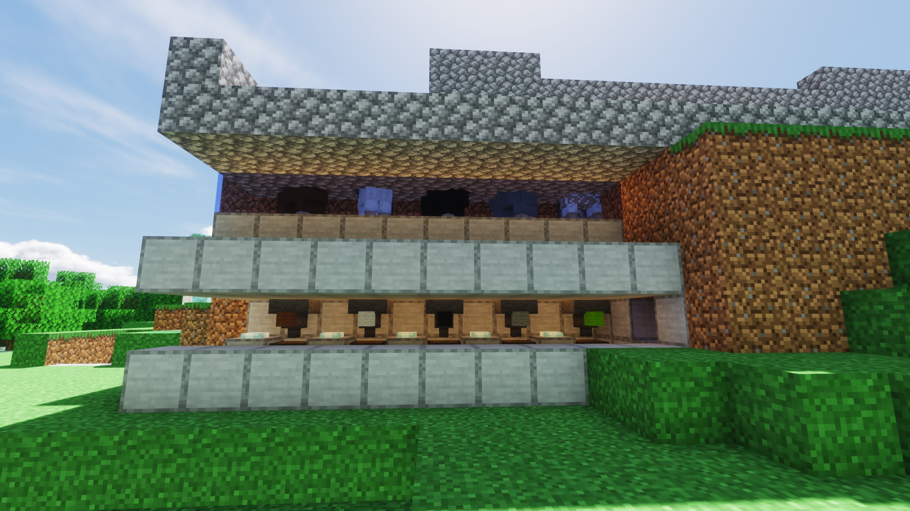
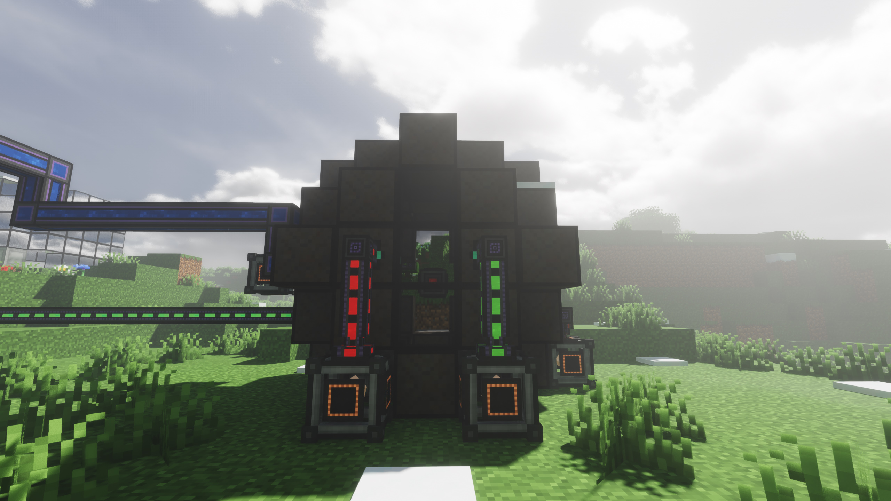

关于本服务器
本服务器是一个一个一个免费游玩的mod服务器包含了多种神奇好玩的模组.现在服务器正在发展中,急缺人才高手,有意入坑请加腐竹qq:1193882688,如想赞助请加腐竹微信:15217622044
自动产羊毛机
注意看,这是一台自动产羊毛机.这台击球由羊和机器本体组成,当羊吃草时,羊会长出羊毛,侦测器会检测到草被吃掉然后发出红石信号让其他方块剪羊毛
这是由yxlx大大制作的机器,生产羊毛的效率极高,很好的解决了服务器羊毛短缺的问题.yxlx大大撒是红石高手,是本服务器的开服元老,为腐竹解决了许多棘手的问题,为腐竹指明了许多自动化生产的道路,为腐竹提出了许多积极的,正确的，直接的，中肯的，雅致的，客观的，完整的，立体的，全面的，辩证的，形而上学的，雅俗共赏的，一针见血的，直击要害的，辩证法的，针对性的，创造性的，发散性的，具有独特意义的，神中神的，我爹的，满昏的，古神的等正面的建议
自动羊毛机的优点
- 速度快
- 耗材低
- 易建造
- 我不到
核聚变锅炉
这是腐竹核电计划第二期工程的产物.这个核电站是腐竹呕心沥血,没日没夜地建造出来的.它有着高达20MJ/tick的被动产能.他的水汽转化量可以带动十个升至九个大型蒸汽涡轮.而在耗材上,它只需要消耗少量氘氚燃料即可运作.氘可以直接电解重水获得,氚需要海水循环蒸馏获得,即使在前期也可以制取.
不觉得这很酷吗，作为一名理工男觉得这太酷了，很符合对未来生活的想象，科技并带着趣味，表示对科技的喜爱。